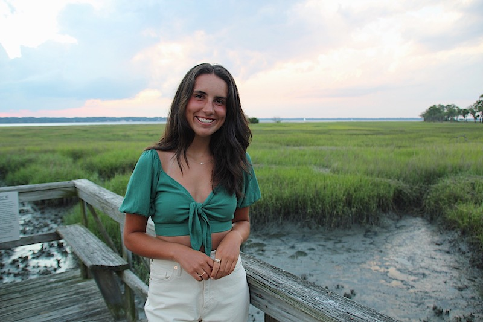

Introducing Sam
Welcome to my site! I'm happy to have you here. Before I go into detail, allow me to introduce myself. My name is Samantha, but most people call me Sam. I'm a nineteen year old from Powell, Ohio, which is a suburb right outside of Columbus. I currently attend Miami University, where I'm majoring in marketing and recently added a minor in Emerging Technology in Business and Design. If my friends were to describe me, they would probably tell you I'm a positive, outgoing, and friendly person. I value spending time with family and friends, but I also value spending time alone. I enjoy pursuing my passions and I'm dedicated to my work. I always put my best effort forward into everything, which I guess makes me somewhat of a perfectionist. Despite this, I love to learn new things and am always open to grow.
There's a lot more I want to tell you, which is why I created this site. I hope by exploring the different pages you get a better feel for who I am. I specifically chose family, entertainment, food, and travel as the topics for each page because these are some of the things I most value. Granted, there are many other topics I could have written about. I probably could have made an entire page about my dog alone--love ya Woody! Or my hobbies, like painting, running, and yoga. But I don't want to bore you with all the details. I hope you enjoy this site at least a fraction of how much I enjoyed making it. Thank you. Have fun. And nice to know you!